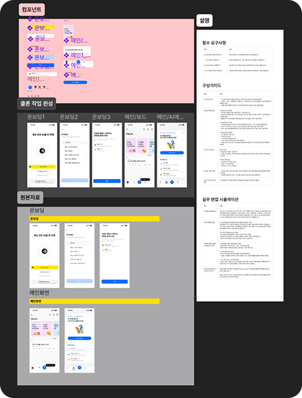
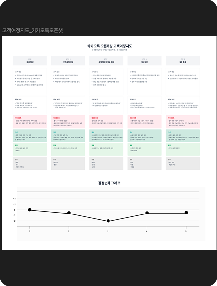

Product
Designer
Jeong-in Kwon
사용자의 방황을 확신으로 바꾸는 디자이너입니다. 5년의 논리적 사고 훈련과 일본에서의 실무 경험을 바탕으로, 복잡함을 덜어내고 본질만 남기는 디자인을 지향합니다.
Project

UI improvement project
복잡한 결제 프로세스를 단순화하여 전환율을 개선한 프로젝트입니다. 사용자 데이터를 기반으로 핵심 문제를 정의하고 해결했습니다.

UX improvement project
사용자 여정 지도를 분석하여 서비스 이탈 지점을 찾아내고, 직관적인 인터페이스로 재설계하여 사용성을 극대화했습니다.
Experience
Product Design Immersion
2025.10 — PresentTransitioned to Product Design with a focus on solving complex user problems.
- Improved service conversion rates by identifying user pain points.
- Developed and maintained scalable component libraries.
City Hall Affiliated Center (Japan)
2023.08 — 2025.08PR & Communication Specialist
- Simplified complex public policies into intuitive visual guides.
- Led communications with local Japanese partners and stakeholders.
Contact
Let's build something great together.
jeonginuxui@gmail.com Resume ↓